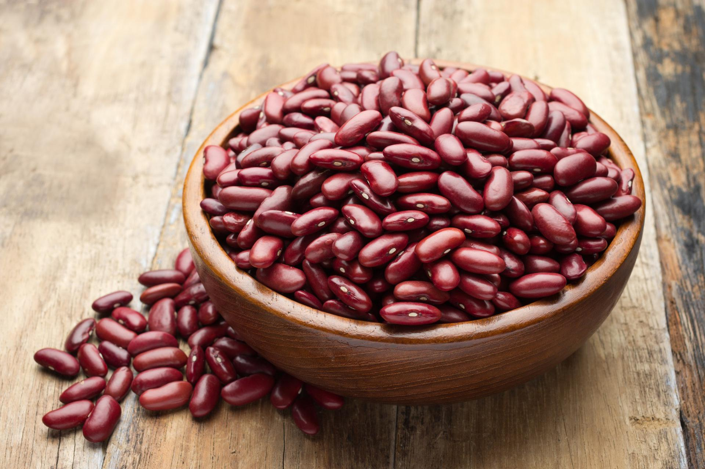

JESTES FASOLA
 fasole s¹ ró¿ne - bia³e, czerwone, fasolka po bretoñsku itp
mo¿na je ugotowaæ na zupê, dodaæ do sa³atki, czy nawet do brownie
jest naprawdê do ró¿nego u¿ytku ale czy to dobrze?
mo¿e w³aœnie lepiej wybraæ swoj¹ niszê a nie szukaæ poklasku
bo finalnie fasola i tak kojarzy sie z pierdzeniem
jesteœ osob¹ która marzy o tym by inni j¹ lubili, ale jest trochê leniwa towarzysko
sprobuj odnalezc cos w czym jestes dobra i tyle